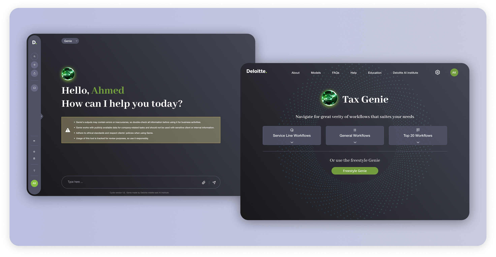
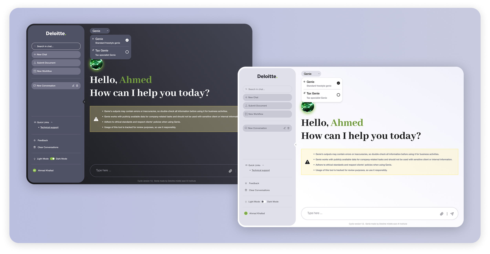

Simplifying Complex Tax Workflows Through
a Structured, High-Precision UX
This project focused on designing a tax calculation tool for Deloitte, where accuracy, compliance, and efficiency are critical to audit and tax services. Users were relying heavily on manual spreadsheets and fragmented workflows, which increased the risk of errors, reduced efficiency, and made complex tax calculations time-consuming and difficult to manage.
The challenge was to design a digital solution that could improve calculation speed and accuracy, reduce dependency on manual spreadsheets, ensure compliance with tax regulations, minimize user errors in complex workflows, and support enterprise-level efficiency and consistency.

The solution was built around structuring a clear, guided, and highly precise user experience that mirrors real-world tax workflows. Based on the provided design direction, I structured the experience using clear and logical information architecture, step-by-step guided workflows, structured data grouping aligned with tax processes, and simplified navigation for complex calculations.
These workflows were designed as guided paths that lead users through each calculation in the correct sequence, ensuring that no critical data is missed while maintaining consistency and compliance across all cases.
Phase 02The interface was intentionally designed to be minimal and distraction-free, precise and data-focused, and optimized for cognitive load reduction. In enterprise tax software, visual noise translates directly into errors — so every element on screen had to earn its place.

The redesigned experience significantly improved usability, clarity, and operational efficiency for Deloitte teams handling complex tax calculations. By simplifying complex financial logic and introducing structured guidance, the tool became a reliable and time-saving solution that enabled higher productivity and more consistent audit outcomes.